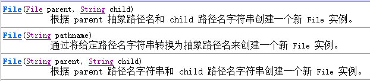
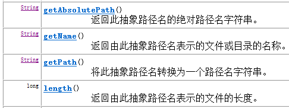
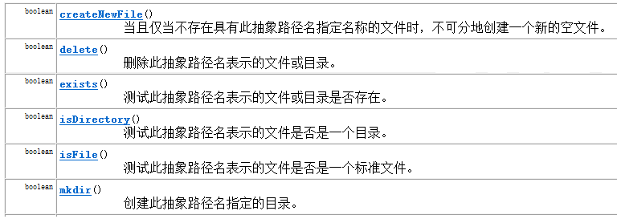
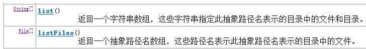
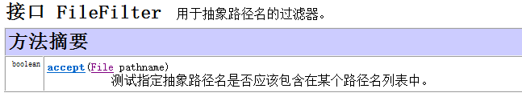
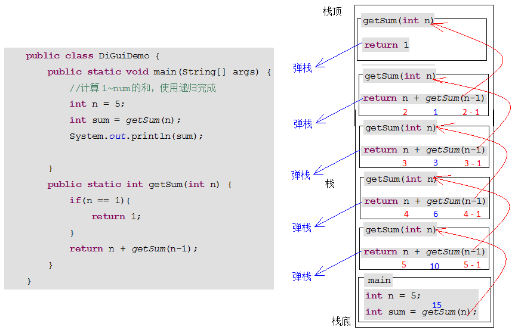

原文连接:https://www.cnblogs.com/liuhui0308/p/11654953.html
1. File
1.1 IO概述
回想之前写过的程序，数据都是在内存中，一旦程序运行结束，这些数据都没有了，等下次再想使用这些数据，可是已经没有了。那怎么办呢？能不能把运算完的数据都保存下来，下次程序启动的时候，再把这些数据读出来继续使用呢？其实要把数据持久化存储，就需要把内存中的数据存储到内存以外的其他持久化设备(硬盘、光盘、U盘等)上。
当需要把内存中的数据存储到持久化设备上这个动作称为输出（写）Output操作。
当把持久设备上的数据读取到内存中的这个动作称为输入（读）Input操作。
因此我们把这种输入和输出动作称为IO操作。
简单了解IO是怎么一回事之后，接下来就要进一步做系统了解。
在我们操作系统中，数据都保存在文件中，而文件存放相应的文件夹中。那么Java中是如何描述这些的呢？
1.2 File类的出现
打开API，搜索File类。阅读其描述：File文件和目录路径名的抽象表示形式。即，Java中把文件或者目录（文件夹）都封装成File对象。也就是说如果我们要去操作硬盘上的文件，或者文件夹只要找到File这个类即可。那么我们就要研究研究File这个类中都有那些功能可以操作文件或者文件夹呢？
1.3 File类的构造函数
File、递归0.png)

通过构造方法创建File对象，我们进行演示：
public class FileDemo {
public static void main(String[] args) {
//File构造函数演示
String pathName = "e:\\java_code\\day22e\\hello.java";
File f1 = new File(pathName);//将Test22文件封装成File对象。注意；有可以封装不存在文件或者文件夹，变成对象。
System.out.println(f1);
File f2 = new File("e:\\java_code\\day22e","hello.java");
System.out.println(f2);
//将parent封装成file对象。
File dir = new File("e:\\java_code\\day22e");
File f3 = new File(dir,"hello.java");
System.out.println(f3);
}
}1.4 File类的获取
创建完了File对象之后，那么File类中都有如下常用方法，可以获取文件相关信息

方法演示如下：
public class FileMethodDemo {
public static void main(String[] args) {
//创建文件对象
File file = new File("Test22.java");
//获取文件的绝对路径，即全路径
String absPath = file.getAbsolutePath();
//File中封装的路径是什么获取到的就是什么。
String path = file.getPath();
//获取文件名称
String filename = file.getName();
//获取文件大小
long size = file.length();
System.out.println("absPath="+absPath);
System.out.println("path="+path);
System.out.println("filename="+filename);
System.out.println("size="+size);
}
}1.5 文件和文件夹的创建删除等
经常上面介绍，我们知道可以通过File获取到文件名称，文件路径(目录)等信息。
接下来演示使用File类创建、删除文件等操作。

我们进行方法的演示
public class FileMethodDemo2 {
public static void main(String[] args) throws IOException {
// 对文件或者文件加进行操作。
File file = new File("e:\\file.txt");
// 创建文件，如果文件不存在，创建 true 如果文件存在，则不创建 false。 如果路径错误，IOException。
boolean b1 = file.createNewFile();
System.out.println("b1=" + b1);
//-----------删除文件操作-------注意：不去回收站。慎用------
boolean b2 = file.delete();
System.out.println("b2="+b2);
//-----------需要判断文件是否存在------------
boolean b3 = file.exists();
System.out.println("b3="+b3);
//-----------对目录操作 创建，删除，判断------------
File dir = new File("e:\\abc");
//mkdir()创建单个目录。//dir.mkdirs();创建多级目录
boolean b4 = dir.mkdir();
System.out.println("b4="+b4);
//删除目录时，如果目录中有内容，无法直接删除。
boolean b5 = dir.delete();
//只有将目录中的内容都删除后，保证该目录为空。这时这个目录才可以删除。
System.out.println("b5=" + b5);
//-----------判断文件，目录------------
File f = new File("e:\\javahaha");// 要判断是否是文件还是目录，必须先判断存在。
// f.mkdir();//f.createNewFile();
System.out.println(f.isFile());
System.out.println(f.isDirectory());
}
}1.6 listFiles()方法介绍
文件都存放在目录（文件夹）中，那么如何获取一个目录中的所有文件或者目录中的文件夹呢？那么我们先想想，一个目录中可能有多个文件或者文件夹，那么如果File中有功能获取到一个目录中的所有文件和文件夹，那么功能得到的结果要么是数组，要么是集合。我们开始查阅API。

方法演示如下：
public class FileMethodDemo3 {
public static void main(String[] args) {
File dir = new File("e:\\java_code");
//获取的是目录下的当前的文件以及文件夹的名称。
String[] names = dir.list();
for(String name : names){
System.out.println(name);
}
//获取目录下当前文件以及文件对象，只要拿到了文件对象，那么就可以获取其中想要的信息
File[] files = dir.listFiles();
for(File file : files){
System.out.println(file);
}
}
}
注意：在获取指定目录下的文件或者文件夹时必须满足下面两个条件
1，指定的目录必须是存在的，
2，指定的必须是目录。否则容易引发返回数组为null，出现NullPointerException
1.7 文件过滤器
通过listFiles()方法，我们可以获取到一个目录下的所有文件和文件夹，但能不能对其进行过滤呢？比如我们只想要一个目录下的指定扩展名的文件，或者包含某些关键字的文件夹呢？
我们是可以先把一个目录下的所有文件和文件夹获取到，并遍历当前获取到所有内容，遍历过程中在进行筛选，但是这个动作有点麻烦，Java给我们提供相应的功能来解决这个问题。
查阅File类的API，在查阅时发现File类中重载的listFiles方法，并且接受指定的过滤器。
测试类
public class FileDemo2 {
public static void main(String[] args) {
//获取扩展名为.java所有文件
//创建File对象
File file = new File("E:\\code\\day11_code");
//获取指定扩展名的文件,由于要对所有文件进行扩展名筛选，因此调用方法需要传递过滤器
File[] files = file.listFiles(new MyFileFilter());
//遍历获取到的所有符合条件的文件
for (File f : files) {
System.out.println(f);
}
}
}自定类继承FilenameFilter过滤器接口
//定义类实现文件名称FilenameFilter过滤器
class MyFileFilter implements FilenameFilter{
public boolean accept(File dir, String name) {
return name.endsWith(".java");
}
}在查阅API时，我们发现，在listFiles(FileFilter filter) 也可以接受一个FileFilter过滤器，它和我们讲的FilenameFilter有啥区别呢？
File、递归8.png)

FilenameFilter过滤器中的accept方法接受两个参数，一个当前文件或文件夹所在的路径，一个是当前文件或文件夹对象的名称。
FileFilter 过滤器中的accept方法接受一个参数，这个参数就当前文件或文件夹对象
当我们需要过滤文件名称时就可以使用FilenameFilter这个过滤器，当我们想对当前文件或文件夹进行过滤，就可以使用FileFilter ，比如需要当前目录下的所有文件夹，就可以使用FileFilter 过滤器。
测试类
public class FileDemo2 {
public static void main(String[] args) {
//获取扩展名为.java所有文件
//创建File对象
File file = new File("E:\\code\\day11_code");
//获取指定目录下的文件夹
File[] files = file.listFiles(new FileFileterByDir());
//遍历获取到的所有符合条件的文件
for (File f : files) {
System.out.println(f);
}
}
}自定义类继承FileFilter过滤器接口
//文件过滤器
class FileFileterByDir implements FileFilter{
public boolean accept(File pathname) {
return pathname.isDirectory();
}
}2. 递归
2.1 递归的概述
递归，指在当前方法内调用自己的这种现象
public void method(){
System.out.println(“递归的演示”);
//在当前方法内调用自己
method();
}递归分为两种，直接递归和间接递归。
直接递归称为方法自身调用自己。间接递归可以A方法调用B方法，B方法调用C方法，C方法调用A方法。
递归的代码演示，计算1-n之间的和，使用递归完成
public class DiGuiDemo {
public static void main(String[] args) {
//计算1~num的和，使用递归完成
int n = 5;
int sum = getSum(n);
System.out.println(sum);
}
public static int getSum(int n) {
if(n == 1){
return 1;
}
return n + getSum(n-1);
}
}代码执行流程图解

注意：递归一定要有条件限定，保证递归能够停止下来，否则会发生栈内存溢出。
在递归中虽然有限定条件，但是递归次数不能太多。否则也会发生栈内存溢出。
2.2 递归打印所有子目录中的文件路径
编写一个方法用来打印指定目录中的文件路径，并进行方法的调用
要求：若指定的目录有子目录，那么把子目录中的文件路径也打印出来
步骤：
1. 指定要打印的目录File对象
2. 调用getFileAll()方法
2.1 获取指定目录中的所有File对象
2.2 遍历得到每一个File对象
2.3 判断当前File 对象是否是目录
判断结果为true，说明为目录，通过递归，再次调用步骤2的getFileAll()方法
判断结果为false，说明是文件，打印文件的路径
代码演示
public class FileDemo2 {
public static void main(String[] args) {
File file = new File("d:\\test");
getFileAll(file);
}
//获取指定目录以及子目录中的所有的文件
public static void getFileAll(File file) {
File[] files = file.listFiles();
//遍历当前目录下的所有文件和文件夹
for (File f : files) {
//判断当前遍历到的是否为目录
if(f.isDirectory()){
//是目录，继续获取这个目录下的所有文件和文件夹
getFileAll(f);
}else{
//不是目录，说明当前f就是文件，那么就打印出来
System.out.println(f);
}
}
}
}2.3 搜索指定目录中的.java文件(含子目录)
需求：打印指定目录即所有子目录中的.java文件的文件路径
要求：编写一个方法用来打印指定目录中的.java文件路径，并进行方法的调用
若指定的目录有子目录，那么把子目录中的.java文件路径也打印出来
步骤：
1. 指定要打印的目录File对象
2. 调用getFileAll()方法，传入要打印的目录File对象
2.1 通过FilenameFilter过滤器获取指定目录中的所有.java类型的File对象
2.2 遍历得到每一个File对象
2.3 判断当前File 对象是否是目录
判断结果为true，说明为目录，通过递归，再次调用步骤2的getFileAll()方法
判断结果为false，说明是文件，打印文件的路径
2.4 实现代码步骤
测试类
public class FileDemo4 {
public static void main(String[] args) {
File file = new File("d:\\test");
getFileAll(file);
}
//获取指定目录以及子目录中的所有的文件
public static void getFileAll(File file) {
File[] files = file.listFiles(MyFileFilter());
//遍历当前目录下的所有文件和文件夹
for (File f : files) {
//判断当前遍历到的是否为目录
if(f.isDirectory()){
//是目录，继续获取这个目录下的所有文件和文件夹
getFileAll(f);
}else{
//不是目录，说明当前f就是文件，那么就打印出来
System.out.println(f);
}
}
}
}自定类继承FilenameFilter过滤器接口
//定义类实现文件名称FilenameFilter过滤器
class MyFileFilter implements FilenameFilter{
public boolean accept(File dir, String name) {
return name.endsWith(".java");
}
}